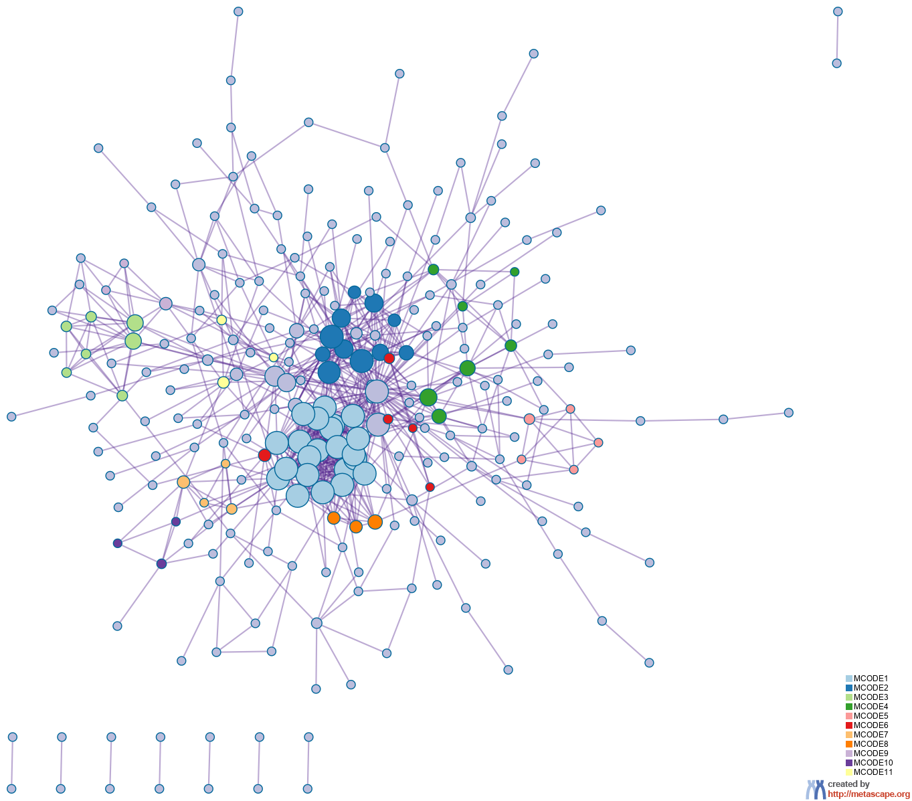
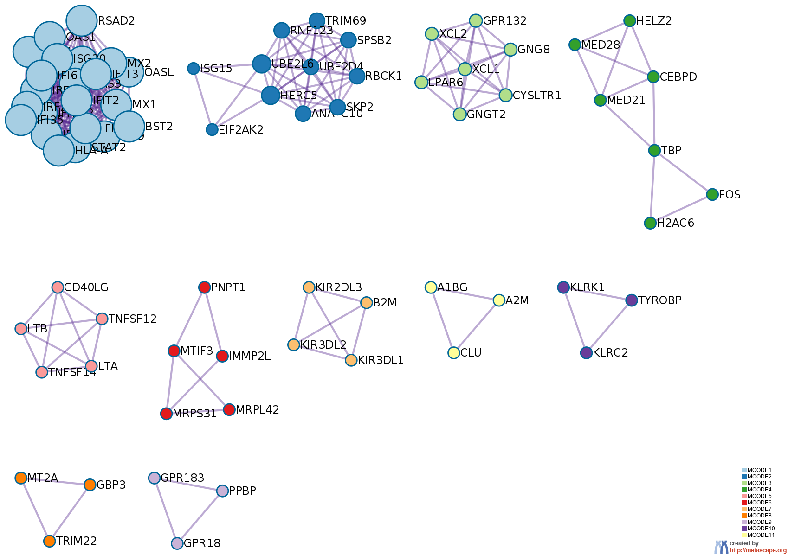
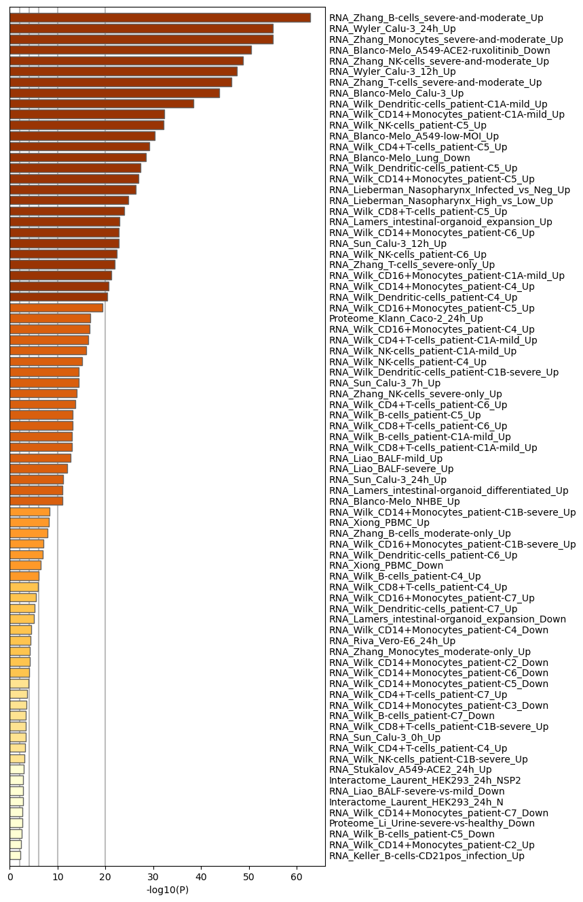
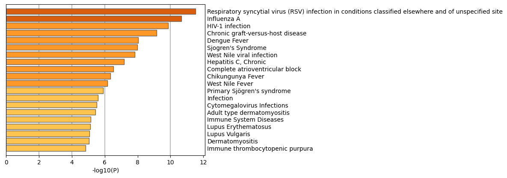
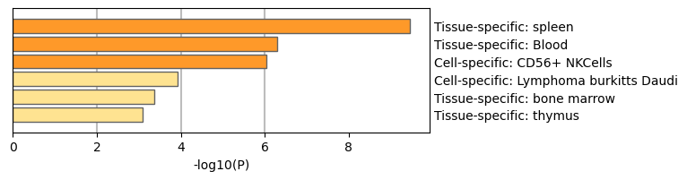
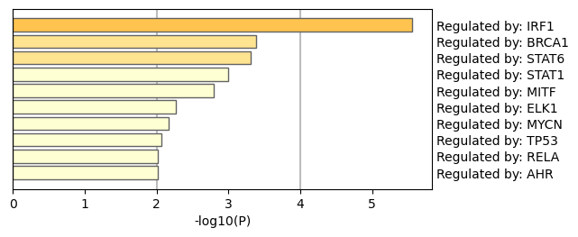
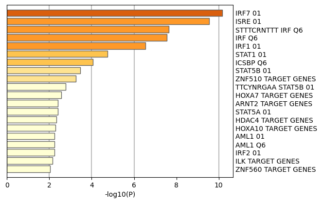

Metascape Gene List Analysis Report
metascape.org1
Bar Graph Summary
Gene Lists
User-provided gene identifiers are first converted into their corresponding H. sapiens Entrez gene IDs using the latest version of the database (last updated on 2021-08-01). If multiple identifiers correspond to the same Entrez gene ID, they will be considered as a single Entrez gene ID in downstream analyses. The gene lists are summarized in Table 1.
Table 1. Statistics of input gene lists.
| Name |
Total |
Unique |
| MyList |
504 |
469 |
Gene Annotation
The following are the list of annotations retrieved from the latest version of the database (last updated on 2021-08-01) (Table 2).
Table 2. Gene annotations extracted
| Name |
Type |
Description |
| Gene Symbol |
Description |
Primary HUGO gene symbol. |
| Description |
Description |
Short description. |
| Biological Process (GO) |
Function/Location |
Descriptions summarized based on gene ontology database, where up to three most informative GO terms are kept. |
| Kinase Class (UniProt) |
Function/Location |
Detailed kinase classes. |
| Protein Function (Protein Atlas) |
Function/Location |
Protein Function (Protein Atlas) |
| Subcellular Location (Protein Atlas) |
Function/Location |
Sucellular Location (Protein Atlas) |
| Drug (DrugBank) |
Genotype/Phenotype/Disease |
Drug information for the given gene as target. |
| Canonical Pathways
|
Ontology |
Canonical Pathways
|
| Hallmark Gene Sets
|
Ontology |
Hallmark Gene Sets
|
Pathway and Process Enrichment Analysis
For each given gene list, pathway and process enrichment analysis has been carried out with the following ontology sources: KEGG Pathway, GO Biological Processes, Reactome Gene Sets, Canonical Pathways, CORUM, TRRUST, DisGeNET, PaGenBase, Transcription Factor Targets, WikiPathways, PANTHER Pathway and COVID. All genes in the genome have been used as the enrichment background. Terms with a p-value < 0.01, a minimum count of 3, and an enrichment factor > 1.5 (the enrichment factor is the ratio between the observed counts and the counts expected by chance) are collected and grouped into clusters based on their membership similarities. More specifically, p-values are calculated based on the accumulative hypergeometric distribution
2, and q-values are calculated using the Banjamini-Hochberg procedure to account for multiple testings
3. Kappa scores
4 are used as the similarity metric when performing hierachical clustering on the enriched terms, and sub-trees with a similarity of > 0.3 are considered a cluster. The most statistically significant term within a cluster is chosen to represent the cluster.
Table 3. Top 20 clusters with their representative enriched terms (one per cluster). "Count" is the number of genes in the user-provided lists with membership in the given ontology term. "%" is the percentage of all of the user-provided genes that are found in the given ontology term (only input genes with at least one ontology term annotation are included in the calculation). "Log10(P)" is the p-value in log base 10. "Log10(q)" is the multi-test adjusted p-value in log base 10.
| GO |
Category |
Description |
Count |
% |
Log10(P) |
Log10(q) |
| GO:0002250 |
GO Biological Processes |
adaptive immune response |
72 |
15.52 |
-34.07 |
-29.71 |
| R-HSA-909733 |
Reactome Gene Sets |
Interferon alpha/beta signaling |
26 |
5.60 |
-27.91 |
-23.85 |
| GO:0034340 |
GO Biological Processes |
response to type I interferon |
16 |
3.45 |
-15.01 |
-11.61 |
| WP4197 |
WikiPathways |
Immune response to tuberculosis |
10 |
2.16 |
-11.90 |
-8.79 |
| GO:0002252 |
GO Biological Processes |
immune effector process |
40 |
8.62 |
-11.82 |
-8.74 |
| GO:0035456 |
GO Biological Processes |
response to interferon-beta |
11 |
2.37 |
-11.69 |
-8.65 |
| GO:0035455 |
GO Biological Processes |
response to interferon-alpha |
9 |
1.94 |
-10.69 |
-7.69 |
| R-HSA-1169410 |
Reactome Gene Sets |
Antiviral mechanism by IFN-stimulated genes |
14 |
3.02 |
-10.30 |
-7.32 |
| R-HSA-198933 |
Reactome Gene Sets |
Immunoregulatory interactions between a Lymphoid and a non-Lymphoid cell |
17 |
3.66 |
-10.16 |
-7.22 |
| GO:0002697 |
GO Biological Processes |
regulation of immune effector process |
22 |
4.74 |
-7.17 |
-4.49 |
| GO:0039530 |
GO Biological Processes |
MDA-5 signaling pathway |
5 |
1.08 |
-6.30 |
-3.66 |
| GO:0002366 |
GO Biological Processes |
leukocyte activation involved in immune response |
18 |
3.88 |
-6.05 |
-3.43 |
| GO:0001819 |
GO Biological Processes |
positive regulation of cytokine production |
24 |
5.17 |
-5.96 |
-3.36 |
| GO:0032728 |
GO Biological Processes |
positive regulation of interferon-beta production |
7 |
1.51 |
-5.51 |
-3.04 |
| GO:0034341 |
GO Biological Processes |
response to interferon-gamma |
12 |
2.59 |
-5.39 |
-2.95 |
| R-HSA-5676594 |
Reactome Gene Sets |
TNF receptor superfamily (TNFSF) members mediating non-canonical NF-kB pathway |
5 |
1.08 |
-5.07 |
-2.65 |
| GO:0044766 |
GO Biological Processes |
multi-organism transport |
5 |
1.08 |
-4.71 |
-2.34 |
| GO:0002275 |
GO Biological Processes |
myeloid cell activation involved in immune response |
9 |
1.94 |
-4.63 |
-2.27 |
| GO:0032020 |
GO Biological Processes |
ISG15-protein conjugation |
3 |
0.65 |
-4.07 |
-1.79 |
| GO:1901224 |
GO Biological Processes |
positive regulation of NIK/NF-kappaB signaling |
7 |
1.51 |
-3.85 |
-1.61 |
To further capture the relationships between the terms, a subset of enriched terms have been selected and rendered as a network plot, where terms with a similarity > 0.3 are connected by edges. We select the terms with the best p-values from each of the 20 clusters, with the constraint that there are no more than 15 terms per cluster and no more than 250 terms in total. The network is visualized using
Cytoscape5, where each node represents an enriched term and is colored first by its cluster ID (Figure 2.a) and then by its p-value (Figure 2.b). These networks can be interactively viewed in Cytoscape through the .cys files (contained in the Zip package, which also contains a publication-quality version as a PDF) or within a browser by clicking on the web icon. For clarity, term labels are only shown for one term per cluster, so it is recommended to use Cytoscape or a browser to visualize the network in order to inspect all node labels. We can also export the network into a PDF file within Cytoscape, and then edit the labels using Adobe Illustrator for publication purposes. To switch off all labels, delete the "Label" mapping under the "Style" tab within Cytoscape, and then export the network view.
Figure 2. Network of enriched terms: (a) colored by cluster ID, where nodes that share the same cluster ID are typically close to each other; (b) colored by p-value, where terms containing more genes tend to have a more significant p-value.
Protein-protein Interaction Enrichment Analysis
For each given gene list, protein-protein interaction enrichment analysis has been carried out with the following databases: STRING
6, BioGrid
7, OmniPath
8, InWeb_IM
9.Only physical interactions in STRING (physical score > 0.132) and BioGrid are used (
details). The resultant network contains the subset of proteins that form physical interactions with at least one other member in the list. If the network contains between 3 and 500 proteins, the Molecular Complex Detection (MCODE) algorithm
10 has been applied to identify densely connected network components. The MCODE networks identified for individual gene lists have been gathered and are shown in Figure 3.
Pathway and process enrichment analysis has been applied to each MCODE component independently, and the three best-scoring terms by p-value have been retained as the functional description of the corresponding components, shown in the tables underneath corresponding network plots within Figure 3.
Figure 3. Protein-protein interaction network and MCODE components identified in the gene lists.
|  | |  |


| |
|
| GO |
Description |
Log10(P) |
| R-HSA-913531 |
Interferon Signaling |
-34.8 |
| GO:0009615 |
response to virus |
-34.4 |
| R-HSA-909733 |
Interferon alpha/beta signaling |
-34.3 |
| |
| Color |
MCODE |
GO |
Description |
Log10(P) |
|
MCODE_1 |
R-HSA-909733 |
Interferon alpha/beta signaling |
-58.9 |
|
MCODE_1 |
R-HSA-913531 |
Interferon Signaling |
-47.8 |
|
MCODE_1 |
GO:0051607 |
defense response to virus |
-35.5 |
|
MCODE_2 |
R-HSA-983168 |
Antigen processing: Ubiquitination & Proteasome degradation |
-16.0 |
|
MCODE_2 |
R-HSA-983169 |
Class I MHC mediated antigen processing & presentation |
-15.2 |
|
MCODE_2 |
R-HSA-1280218 |
Adaptive Immune System |
-12.4 |
|
MCODE_3 |
R-HSA-416476 |
G alpha (q) signalling events |
-14.8 |
|
MCODE_3 |
R-HSA-500792 |
GPCR ligand binding |
-12.5 |
|
MCODE_3 |
R-HSA-388396 |
GPCR downstream signalling |
-11.6 |
|
MCODE_4 |
R-HSA-381340 |
Transcriptional regulation of white adipocyte differentiation |
-8.6 |
|
MCODE_4 |
R-HSA-1989781 |
PPARA activates gene expression |
-5.6 |
|
MCODE_4 |
R-HSA-400206 |
Regulation of lipid metabolism by PPARalpha |
-5.6 |
|
MCODE_5 |
R-HSA-5676594 |
TNF receptor superfamily (TNFSF) members mediating non-canonical NF-kB pathway |
-16.2 |
|
MCODE_5 |
R-HSA-5668541 |
TNFR2 non-canonical NF-kB pathway |
-12.2 |
|
MCODE_5 |
hsa04060 |
Cytokine-cytokine receptor interaction |
-10.1 |
|
MCODE_6 |
R-HSA-5368286 |
Mitochondrial translation initiation |
-6.5 |
|
MCODE_6 |
R-HSA-5368287 |
Mitochondrial translation |
-6.5 |
|
MCODE_6 |
R-HSA-72766 |
Translation |
-5.0 |
|
MCODE_7 |
ko04612 |
Antigen processing and presentation |
-10.3 |
|
MCODE_7 |
hsa04612 |
Antigen processing and presentation |
-10.3 |
|
MCODE_7 |
R-HSA-198933 |
Immunoregulatory interactions between a Lymphoid and a non-Lymphoid cell |
-9.3 |
|
MCODE_8 |
R-HSA-877300 |
Interferon gamma signaling |
-7.5 |
|
MCODE_8 |
R-HSA-913531 |
Interferon Signaling |
-6.5 |
|
MCODE_8 |
R-HSA-1280215 |
Cytokine Signaling in Immune system |
-4.8 |
|
MCODE_9 |
GO:0030595 |
leukocyte chemotaxis |
-6.3 |
|
MCODE_9 |
GO:0060326 |
cell chemotaxis |
-5.9 |
|
MCODE_9 |
R-HSA-418594 |
G alpha (i) signalling events |
-5.8 |
|
MCODE_10 |
R-HSA-2424491 |
DAP12 signaling |
-9.0 |
|
MCODE_10 |
R-HSA-2172127 |
DAP12 interactions |
-8.4 |
|
MCODE_10 |
GO:0001912 |
positive regulation of leukocyte mediated cytotoxicity |
-8.1 |
|
MCODE_11 |
R-HSA-114608 |
Platelet degranulation |
-7.0 |
|
MCODE_11 |
R-HSA-76005 |
Response to elevated platelet cytosolic Ca2+ |
-7.0 |
|
MCODE_11 |
R-HSA-76002 |
Platelet activation, signaling and aggregation |
-6.1 |
|
Quality Control and Association Analysis
Gene list enrichments are identified in the following ontology categories: COVID, DisGeNET, PaGenBase, TRRUST, Transcription_Factor_Targets. All genes in the genome have been used as the enrichment background. Terms with a p-value < 0.01, a minimum count of 3, and an enrichment factor > 1.5 (the enrichment factor is the ratio between the observed counts and the counts expected by chance) are collected and grouped into clusters based on their membership similarities. The top few enriched clusters (one term per cluster) are shown in the Figure 4-8. The algorithm used here is the same as that is used for pathway and process enrichment analysis.
Figure 4. Summary of enrichment analysis in COVID11.
|

|
|
|
| GO |
Description |
Count |
% |
Log10(P) |
Log10(q) |
| COVID362 |
RNA_Zhang_B-cells_severe-and-moderate_Up |
46 |
9.90 |
-63.00 |
-58.00 |
| COVID050 |
RNA_Wyler_Calu-3_24h_Up |
67 |
14.00 |
-55.00 |
-51.00 |
| COVID353 |
RNA_Zhang_Monocytes_severe-and-moderate_Up |
50 |
11.00 |
-55.00 |
-51.00 |
| COVID011 |
RNA_Blanco-Melo_A549-ACE2-ruxolitinib_Down |
58 |
12.00 |
-51.00 |
-47.00 |
| COVID356 |
RNA_Zhang_NK-cells_severe-and-moderate_Up |
42 |
9.10 |
-49.00 |
-45.00 |
| COVID048 |
RNA_Wyler_Calu-3_12h_Up |
61 |
13.00 |
-47.00 |
-44.00 |
| COVID359 |
RNA_Zhang_T-cells_severe-and-moderate_Up |
46 |
9.90 |
-46.00 |
-43.00 |
| COVID016 |
RNA_Blanco-Melo_Calu-3_Up |
58 |
12.00 |
-44.00 |
-40.00 |
| COVID273 |
RNA_Wilk_Dendritic-cells_patient-C1A-mild_Up |
27 |
5.80 |
-38.00 |
-35.00 |
| COVID244 |
RNA_Wilk_CD14+Monocytes_patient-C1A-mild_Up |
30 |
6.50 |
-32.00 |
-29.00 |
| COVID297 |
RNA_Wilk_NK-cells_patient-C5_Up |
26 |
5.60 |
-32.00 |
-29.00 |
| COVID014 |
RNA_Blanco-Melo_A549-low-MOI_Up |
22 |
4.70 |
-30.00 |
-27.00 |
| COVID329 |
RNA_Wilk_CD4+T-cells_patient-C5_Up |
22 |
4.70 |
-29.00 |
-26.00 |
| COVID017 |
RNA_Blanco-Melo_Lung_Down |
42 |
9.10 |
-28.00 |
-25.00 |
| COVID282 |
RNA_Wilk_Dendritic-cells_patient-C5_Up |
26 |
5.60 |
-27.00 |
-24.00 |
| COVID254 |
RNA_Wilk_CD14+Monocytes_patient-C5_Up |
29 |
6.20 |
-27.00 |
-24.00 |
| COVID239 |
RNA_Lieberman_Nasopharynx_Infected_vs_Neg_Up |
21 |
4.50 |
-26.00 |
-23.00 |
| COVID241 |
RNA_Lieberman_Nasopharynx_High_vs_Low_Up |
33 |
7.10 |
-25.00 |
-22.00 |
| COVID313 |
RNA_Wilk_CD8+T-cells_patient-C5_Up |
20 |
4.30 |
-24.00 |
-21.00 |
| COVID028 |
RNA_Lamers_intestinal-organoid_expansion_Up |
31 |
6.70 |
-23.00 |
-20.00 |
|
Figure 5. Summary of enrichment analysis in DisGeNET12.
|

|
|
|
| GO |
Description |
Count |
% |
Log10(P) |
Log10(q) |
| C0375023 |
Respiratory syncytial virus (RSV) infection in conditions classified elsewhere and of unspecified site |
33 |
7.10 |
-12.00 |
-8.70 |
| C2062441 |
Influenza A |
35 |
7.50 |
-11.00 |
-7.80 |
| C2363741 |
HIV-1 infection |
38 |
8.20 |
-9.90 |
-7.10 |
| C0867389 |
Chronic graft-versus-host disease |
21 |
4.50 |
-9.20 |
-6.40 |
| C0011311 |
Dengue Fever |
24 |
5.20 |
-8.00 |
-5.30 |
| C1527336 |
Sjogren's Syndrome |
28 |
6.00 |
-8.00 |
-5.20 |
| C1096184 |
West Nile viral infection |
16 |
3.40 |
-7.80 |
-5.10 |
| C0524910 |
Hepatitis C, Chronic |
25 |
5.40 |
-7.20 |
-4.50 |
| C0151517 |
Complete atrioventricular block |
23 |
5.00 |
-6.50 |
-3.80 |
| C0008055 |
Chikungunya Fever |
13 |
2.80 |
-6.30 |
-3.70 |
| C0043124 |
West Nile Fever |
10 |
2.20 |
-6.20 |
-3.50 |
| C0151449 |
Primary Sjögren's syndrome |
19 |
4.10 |
-5.90 |
-3.30 |
| C3714514 |
Infection |
24 |
5.20 |
-5.60 |
-2.90 |
| C0010823 |
Cytomegalovirus Infections |
23 |
5.00 |
-5.50 |
-2.90 |
| C0221056 |
Adult type dermatomyositis |
15 |
3.20 |
-5.40 |
-2.80 |
| C0021053 |
Immune System Diseases |
22 |
4.70 |
-5.10 |
-2.60 |
| C0409974 |
Lupus Erythematosus |
25 |
5.40 |
-5.10 |
-2.50 |
| C0024131 |
Lupus Vulgaris |
24 |
5.20 |
-5.10 |
-2.50 |
| C0011633 |
Dermatomyositis |
15 |
3.20 |
-5.00 |
-2.40 |
| C0398650 |
Immune thrombocytopenic purpura |
18 |
3.90 |
-4.80 |
-2.20 |
|
Figure 6. Summary of enrichment analysis in PaGenBase13.
|

|
|
|
| GO |
Description |
Count |
% |
Log10(P) |
Log10(q) |
| PGB:00011 |
Tissue-specific: spleen |
31 |
6.70 |
-9.50 |
-6.70 |
| PGB:00041 |
Tissue-specific: Blood |
17 |
3.70 |
-6.30 |
-3.60 |
| PGB:00043 |
Cell-specific: CD56+ NKCells |
9 |
1.90 |
-6.00 |
-3.40 |
| PGB:00086 |
Cell-specific: Lymphoma burkitts Daudi |
6 |
1.30 |
-3.90 |
-1.50 |
| PGB:00048 |
Tissue-specific: bone marrow |
12 |
2.60 |
-3.40 |
-1.00 |
| PGB:00016 |
Tissue-specific: thymus |
11 |
2.40 |
-3.10 |
-0.81 |
|
Figure 7. Summary of enrichment analysis in TRRUST.
|

|
|
|
| GO |
Description |
Count |
% |
Log10(P) |
Log10(q) |
| TRR00602 |
Regulated by: IRF1 |
8 |
1.70 |
-5.60 |
-2.90 |
| TRR00075 |
Regulated by: BRCA1 |
6 |
1.30 |
-3.40 |
-1.00 |
| TRR01282 |
Regulated by: STAT6 |
5 |
1.10 |
-3.30 |
-0.98 |
| TRR01275 |
Regulated by: STAT1 |
7 |
1.50 |
-3.00 |
-0.72 |
| TRR00757 |
Regulated by: MITF |
4 |
0.86 |
-2.80 |
-0.56 |
| TRR00263 |
Regulated by: ELK1 |
3 |
0.65 |
-2.30 |
-0.17 |
| TRR00781 |
Regulated by: MYCN |
4 |
0.86 |
-2.20 |
-0.09 |
| TRR01419 |
Regulated by: TP53 |
8 |
1.70 |
-2.10 |
-0.03 |
| TRR01158 |
Regulated by: RELA |
12 |
2.60 |
-2.00 |
0.00 |
| TRR00004 |
Regulated by: AHR |
3 |
0.65 |
-2.00 |
0.00 |
|
Figure 8. Summary of enrichment analysis in Transcription_Factor_Targets14.
|

|
|
|
| GO |
Description |
Count |
% |
Log10(P) |
Log10(q) |
| M12258 |
IRF7 01 |
23 |
5.00 |
-10.00 |
-7.40 |
| M16200 |
ISRE 01 |
22 |
4.70 |
-9.60 |
-6.80 |
| M533 |
STTTCRNTTT IRF Q6 |
17 |
3.70 |
-7.60 |
-4.90 |
| M14066 |
IRF Q6 |
19 |
4.10 |
-7.60 |
-4.80 |
| M2709 |
IRF1 01 |
18 |
3.90 |
-6.50 |
-3.90 |
| M17627 |
STAT1 01 |
8 |
1.70 |
-4.80 |
-2.20 |
| M2727 |
ICSBP Q6 |
14 |
3.00 |
-4.10 |
-1.60 |
| M6144 |
STAT5B 01 |
13 |
2.80 |
-3.50 |
-1.10 |
| M30334 |
ZNF510 TARGET GENES |
5 |
1.10 |
-3.30 |
-0.95 |
| M6378 |
TTCYNRGAA STAT5B 01 |
14 |
3.00 |
-2.80 |
-0.54 |
| M30009 |
HOXA7 TARGET GENES |
7 |
1.50 |
-2.60 |
-0.39 |
| M29890 |
ARNT2 TARGET GENES |
21 |
4.50 |
-2.40 |
-0.27 |
| M17883 |
STAT5A 01 |
11 |
2.40 |
-2.40 |
-0.26 |
| M29991 |
HDAC4 TARGET GENES |
21 |
4.50 |
-2.30 |
-0.22 |
| M30007 |
HOXA10 TARGET GENES |
11 |
2.40 |
-2.30 |
-0.19 |
| M15241 |
AML1 01 |
11 |
2.40 |
-2.30 |
-0.16 |
| M6002 |
AML1 Q6 |
11 |
2.40 |
-2.30 |
-0.16 |
| M17687 |
IRF2 01 |
7 |
1.50 |
-2.20 |
-0.16 |
| M30026 |
ILK TARGET GENES |
3 |
0.65 |
-2.20 |
-0.09 |
| M30350 |
ZNF560 TARGET GENES |
4 |
0.86 |
-2.00 |
-0.01 |
|
Reference
- Zhou et al., Metascape provides a biologist-oriented resource for the analysis of systems-level datasets. Nature Communications (2019) 10(1):1523.
- Zar, J.H. Biostatistical Analysis 1999 4th edn., NJ Prentice Hall, pp. 523
- Hochberg Y., Benjamini Y. More powerful procedures for multiple significance testing. Statistics in Medicine (1990) 9:811-818.
- Cohen, J. A coefficient of agreement for nominal scales. Educ. Psychol. Meas. (1960) 20:27-46.
- Shannon P. et al., Cytoscape: a software environment for integrated models of biomolecular interaction networks. Genome Res (2003) 11:2498-2504.
- Szklarczyk D. et al. STRING v11: protein-protein association networks with increased coverage, supporting functional discovery in genome-wide experimental datasets. Nucleic Acids Res. (2019) 47:D607-613.
- Stark C. et al. BioGRID: a general repository for interaction datasets. Nucleic Acids Res. (2006) 34:D535-539.
- Turei D. et al. A scored human protein-protein interaction network to catalyze genomic interpretation. Nat. Methods. (2016) 13:966-967.
- Li T. et al. A scored human protein-protein interaction network to catalyze genomic interpretation. Nat. Methods. (2017) 14:61-64.
- Bader, G.D. et al. An automated method for finding molecular complexes in large protein interaction networks. BMC bioinformatics (2003) 4:2.
- https://metascape.org/COVID.
- Pinero J, et al. DisGeNET: a comprehensive platform integrating information on human disease-associated genes and variants. Nucleic acids research 45, D833-D839 (2017).
- Pan JB, et al. PaGenBase: a pattern gene database for the global and dynamic understanding of gene function. PLoS One 8, e80747 (2013).
- Subramanian A, et al. Gene set enrichment analysis: A knowledge-based approach for interpreting genome-wide expression profiles. Proc Natl Acad Sci U S A 102, 15545-15550 (2005).

{kind=link}